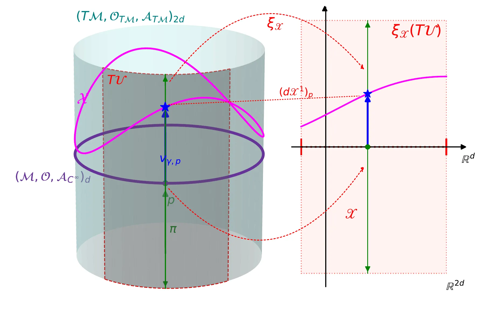

5.1 Vector Fields
Chapter 5 • Fields
5.1 Vector Fields
Given two (smooth) manifolds \(\left(\mathcal{M}, \mathcal{O}_\mathcal{M}, \mathcal{A}_\mathcal{M}\right)\), and \(\left(\mathcal{N}, \mathcal{O}_\mathcal{N}, \mathcal{A}_\mathcal{N}\right)\), the triple \begin{align*} \underbrace{(\mathcal{M}, \mathcal{O}_\mathcal{M}, \mathcal{A}_\mathcal{M})}_{\text{Total space}} \xlongrightarrow[]{\pi} \underbrace{(\mathcal{N}, \mathcal{O}_\mathcal{N}, \mathcal{A}_\mathcal{N})}_{\text{Base space}} \end{align*} is a (smooth) bundle if the total space \(\mathcal{M}\) and the base space \(\mathcal{N}\) are (smooth) manifolds, and the projection map \(\pi: \mathcal{M} \to \mathcal{N}\) is a (smooth) surjective map.
A fibre over \(p \in \mathcal{N}\) is the set \(\text{preim}_\pi(\{p\}) \subseteq \mathcal{M}\).
A section is a map \(\sigma : \mathcal{N} \to \mathcal{M}\) such that \((\pi \circ \sigma) = \mathbb{I}_{\mathcal{N}}\) (identity map).
The (smooth) tangent bundle upon the (smooth) manifold \((\mathcal{M}, \mathcal{O}, \mathcal{A})\) is: \begin{align*} (T\mathcal{M}, \mathcal{O}_{T\mathcal{M}}, \mathcal{A}_{T\mathcal{M}}) \xrightarrow[]{\pi} (\mathcal{M}, \mathcal{O}, \mathcal{A}) \end{align*} Here we are considering the following definitions:
\(T\mathcal{M}\) is the disjoint union of tangent spaces \(T_p\mathcal{M}\), i.e., \begin{align*} T\mathcal{M} := \dot{\bigcup_{p \in \mathcal{M}}} T_p \mathcal{M}. \end{align*}
The projection map, \(\pi\), is given by \begin{align*} \pi : T\mathcal{M} &\to \mathcal{M} \\ v_{\gamma, p} &\mapsto \pi (v_{\gamma, p}) := p, \end{align*} where \( p \) is the unique point such that \( v_{\gamma, p} \in T_p \mathcal{M} \).
The bundle chart maps. For every chart \((\mathcal{U}, \mathscr{X}) \in \mathcal{A}\), let \(T\mathcal{U} \coloneqq \operatorname{preim}_\pi(\mathcal{U})\) be the set of all tangent vectors based at points of \(\mathcal{U}\), and define \begin{align*} \xi_{\mathscr{X}} : T\mathcal{U} &\longrightarrow \mathscr{X}(\mathcal{U}) \times \mathbb{R}^{d} \subseteq \mathbb{R}^{2d} \\ v_{\gamma, p} &\longmapsto \xi_{\mathscr{X}} (v_{\gamma, p}), \end{align*} where \begin{align*} \xi_{\mathscr{X}} (v_{\gamma, p}) := \big( \underbrace{..., (\mathscr{X}^i \circ \pi)(v_{\gamma, p}), ...}_{\substack{i\in [1, d] \text{ terms.}\\ \text{Chart coordinates w.r.t. } (\mathcal{U}, \mathscr{X}) \\ \text{for the base point } p \text{ of } v_{\gamma, p}}} ; \underbrace{..., (d\mathscr{X}^j)_{p}(v_{\gamma, p}), ... }_{\substack{j\in [1, d] \text{ terms.}\\ \text{Components of } v_{\gamma, p} \\ \text{w.r.t. the chart-induced} \\ \text{basis of } T_p \mathcal{M}}} \big) = \big( ..., \mathscr{X}^i(p), ...\, ; ..., \dot{\gamma}^j_\mathcal{U}(\lambda_0), ... \big). \end{align*} Each \(\xi_{\mathscr{X}}\) is a bijection onto the open set \(\mathscr{X}(\mathcal{U}) \times \mathbb{R}^d\): a tangent vector is uniquely determined by its base point together with its components in the chart-induced basis of \(T_p\mathcal{M}\), and every such choice of data is realized by some tangent vector. The inverse map is \begin{align*} \xi_{\mathscr{X}}^{-1} : \mathscr{X}(\mathcal{U}) \times \mathbb{R}^{d} &\longrightarrow T\mathcal{U} \\ (\underbrace{..., \alpha^i, ...}_{i\in [1, d]} ; \underbrace{..., \beta^j, ...}_{j\in [1, d]}) &\longmapsto \sum_{k=1}^{d} \beta^k \left(\frac{\partial}{\partial \mathscr{X}^k} \right)_{p=\mathscr{X}^{-1}\left(\dots, \alpha^i, \dots \right)}. \end{align*} Given a second chart \((\mathcal{V}, \mathscr{Y}) \in \mathcal{A}\), the overlap of the two bundle charts is \(\xi_{\mathscr{X}}(T\mathcal{U} \cap T\mathcal{V}) = \mathscr{X}(\mathcal{U} \cap \mathcal{V}) \times \mathbb{R}^d\), an open subset of \(\mathbb{R}^{2d}\). Writing \(\alpha = (\alpha^1, \dots, \alpha^d)\) and \(p = \mathscr{X}^{-1}(\alpha)\), and using \((d\mathscr{Y}^j)_p\big( (\partial / \partial \mathscr{X}^k)_p \big) = \partial_k \left[ \mathscr{Y}^j \circ \mathscr{X}^{-1} \right] (\alpha)\), the transition map between bundle charts reads \begin{align*} (\xi_{\mathscr{Y}} \circ \xi_{\mathscr{X}}^{-1})(\alpha \,;\, \beta) &= \Big( \dots, \mathscr{Y}^j(p), \dots \,;\, \dots, (d\mathscr{Y}^j)_p \Big( \sum_{k=1}^{d} \beta^k \Big(\frac{\partial}{\partial \mathscr{X}^k}\Big)_p \Big), \dots \Big) \\ &= \Big( \dots, \big(\mathscr{Y}^j \circ \mathscr{X}^{-1}\big)(\alpha), \dots \,;\, \dots, \sum_{k=1}^{d} \partial_k \big[\mathscr{Y}^j \circ \mathscr{X}^{-1}\big](\alpha) \, \beta^k, \dots \Big) \\ &= \Big( \textrm{\runic ᛖ}_{\mathcal{U}\mathcal{V}}(\alpha) \,;\, \dots, \sum_{k=1}^{d} \left( \textrm{\runic ᛞ}_{\mathcal{V}\mathcal{U}} \right)^j_{k}(\alpha) \, \beta^k, \dots \Big). \end{align*} Base coordinates change with the chart transition map, and fibre coordinates with its Jacobian, exactly as the vector components of Subsection 4.1.1. Since \(\textrm{\runic ᛖ}_{\mathcal{U}\mathcal{V}}\) is \(C^\infty\), so are the entries of its Jacobian, and the second block is linear in \(\beta\): the transition map is \(C^\infty\), and so is its inverse \(\xi_{\mathscr{X}} \circ \xi_{\mathscr{Y}}^{-1}\), by the same argument with the roles of the charts exchanged.
The topology \(\mathcal{O}_{T\mathcal{M}}\) on \(T\mathcal{M}\) is the one that turns every bundle chart map into a homeomorphism1: a set of tangent vectors is declared open if and only if it looks open in every bundle chart, \begin{align*} \mathcal{O}_{T\mathcal{M}} \coloneqq \Big\{ W \subseteq T\mathcal{M} \;\Big|\; \xi_{\mathscr{X}}(W \cap T\mathcal{U}) \in \mathcal{O}_{\mathbb{R}^{2d}} \;\; \forall \, (\mathcal{U}, \mathscr{X}) \in \mathcal{A} \Big\}. \end{align*} With this topology every \(T\mathcal{U}\) is open, every \(\xi_{\mathscr{X}}\) is a homeomorphism onto \(\mathscr{X}(\mathcal{U}) \times \mathbb{R}^d\), and \(\pi\) is continuous, since \(\operatorname{preim}_\pi(\mathcal{U}') \in \mathcal{O}_{T\mathcal{M}}\) for every \(\mathcal{U}' \in \mathcal{O}\).
Note that \(\mathcal{O}_{T\mathcal{M}}\) is strictly finer than the collection \(\{ \operatorname{preim}_\pi(\mathcal{U}) \mid \mathcal{U} \in \mathcal{O} \}\), the initial topology w.r.t. \(\pi\) alone. The latter only contains unions of entire fibres. It therefore cannot separate two different vectors based at the same point, and w.r.t. it the maps \(\xi_{\mathscr{X}}\) would not even be continuous: e.g. \(\xi_{\mathscr{X}}^{-1}\big( \mathscr{X}(\mathcal{U}) \times (0,1)^d \big)\), the set of vectors over \(\mathcal{U}\) whose components all lie in \((0,1)\), is not a union of fibres. The information about directions within each fibre is precisely what the bundle charts add.
The smooth atlas \begin{align*} \mathcal{A}_{T\mathcal{M}} \coloneqq \{ (T\mathcal{U}, \xi_{\mathscr{X}}) \mid (\mathcal{U}, \mathscr{X}) \in \mathcal{A} \}. \end{align*} Its chart domains cover \(T\mathcal{M}\) because the chart domains of \(\mathcal{A}\) cover \(\mathcal{M}\). Its chart maps are homeomorphisms onto open subsets of \(\mathbb{R}^{2d}\), and they are pairwise \(C^\infty\)-compatible by the transition computation above. Hence \((T\mathcal{M}, \mathcal{O}_{T\mathcal{M}}, \mathcal{A}_{T\mathcal{M}})_{2d}\) is a \(2d\)-dimensional smooth manifold.
A smooth vector field is a smooth section on the tangent bundle \begin{align*} \mathcal{X} : \mathcal{M} &\to T\mathcal{M} \\ p &\mapsto \mathcal{X}(p) := v_{\gamma, p}, \end{align*} with \((\pi \circ \mathcal{X}) = \mathbb{I}_{\mathcal{M}}\). In the compact notation of Subsection 4.1.2, \(\mathcal{X}(p) = \mathcal{X}_p\).
We will employ the following notation to define the action of a vector field \(\mathcal{X}\) upon a function \(f \in C^{\infty}(\mathcal{M})\): \begin{align*} \mathcal{X} : C^{\infty}(\mathcal{M}) &\longrightarrow C^{\infty}(\mathcal{M}) \\ f &\longmapsto \mathcal{X}\left\lfloor f \right\rceil \colon \begin{aligned}[t] \mathcal{M} &\longrightarrow \mathbb{R} \\ p &\longmapsto \mathcal{X}\left\lfloor f \right\rceil(p) \coloneqq v_{\gamma, p}(f). \end{aligned} \end{align*} That is, \(\mathcal{X}\left\lfloor f \right\rceil\) is itself a scalar field, returning at each point the directional derivative of \(f\) along the vector that \(\mathcal{X}\) places there. We can therefore think of a vector field in three equivalent ways, depending on which argument we supply first:
Point first: as a section, eating points \(p \in \mathcal{M}\) and returning tangent vectors \(\mathcal{X}(p) = v_{\gamma, p} \in T_p\mathcal{M}\).
Function first: as an operator, eating scalar fields \(f \in C^{\infty}(\mathcal{M})\) and returning, \(\mathbb{R}\)-linearly, new scalar fields \(\mathcal{X}\left\lfloor f \right\rceil \in C^{\infty}(\mathcal{M})\).
Both: once \(f\) is fixed, \(\mathcal{X}\left\lfloor f \right\rceil\) eats points \(p \in \mathcal{M}\) and returns the real numbers \(\mathcal{X}\left\lfloor f \right\rceil(p) \in \mathbb{R}\).
All three readings meet in the same number, \(\mathcal{X}\left\lfloor f \right\rceil(p) = \mathcal{X}(p)(f) = v_{\gamma, p}(f)\).
Recall that in Section 4.1 we equipped the set of scalar fields \(C^{\infty}(\mathcal{M})\) with a point-wise addition and s-multiplication, yielding the triplet \((C^{\infty}(\mathcal{M}), \oplus, \odot)\), where the operations are defined as: \begin{align*} (f \oplus g)(p) \coloneqq f(p) + g(p), \qquad (\alpha \odot f)(p) \coloneqq \alpha \cdot f(p), \qquad \forall \, f, g \in C^{\infty}(\mathcal{M}), \; \alpha \in \mathbb{R}, \; p \in \mathcal{M}. \end{align*} Together with the field \((\mathbb{R}, +, \cdot)\), these operations satisfy all axioms of an \(\mathbb{R}\)-vector space.
However, now we are interested in defining directly the triplet \((C^{\infty}(\mathcal{M}), \oplus_{C^{\infty}}, \odot_{C^{\infty}})\), with the operations defined as: \begin{align*} (f \oplus_{C^{\infty}} g)(p) \coloneqq f(p) + g(p), \qquad (f \odot_{C^{\infty}} g)(p) \coloneqq f(p) \cdot g(p), \qquad \forall \, f, g \in C^{\infty}(\mathcal{M}), \; p \in \mathcal{M}. \end{align*} Note that, in this triplet, both operations act within \(C^{\infty}(\mathcal{M})\): the role of the scalars is now played by scalar fields themselves, rather than by elements of the field \((\mathbb{R}, +, \cdot)\). Its axioms are inherited point-wise from \((\mathbb{R}, +, \cdot)\), with the zero field \(0 \colon p \mapsto 0\) as neutral element of \(\oplus_{C^{\infty}}\) and the unit field \(1 \colon p \mapsto 1\) as neutral element of \(\odot_{C^{\infty}}\), making it a commutative, unitary ring. It is, however, not a field: the inverse \(f^{-1}\) with \(f \odot_{C^{\infty}} f^{-1} = 1\) exists only if \(f(p) \neq 0\) for every \(p \in \mathcal{M}\), so any scalar field that vanishes at some point without being the zero field has none. The real numbers have not disappeared, though: identifying each \(\alpha \in \mathbb{R}\) with the constant field \(p \mapsto \alpha\), the old s-multiplication is recovered as a special case of the new product, \(\alpha \odot f = \alpha \odot_{C^{\infty}} f\). Both structures therefore coexist compatibly: \(C^{\infty}(\mathcal{M})\) is simultaneously an \(\mathbb{R}\)-vector space and a commutative, unitary ring, a structure known as a commutative, unitary \(\mathbb{R}\)-algebra. Correspondingly, the modules below are also \(\mathbb{R}\)-vector spaces, a fact that will matter for connections (Chapter 6), which are \(\mathbb{R}\)-linear, but not \(C^{\infty}(\mathcal{M})\)-linear, in their second argument.
The \(C^{\infty}(\mathcal{M})\)-module \(\Gamma T \mathcal{M}\) is the triplet \((\Gamma T \mathcal{M}, \oplus_\Gamma, \odot_\Gamma)\), built over the commutative, unitary ring \((C^{\infty}(\mathcal{M}), \oplus_{C^{\infty}}, \odot_{C^{\infty}})\) of the previous item. Since its scalars now come from a ring rather than from a field, the result is a module rather than a vector space. Here \(\Gamma T \mathcal{M} \coloneqq \{\mathcal{X} : \mathcal{M} \to T\mathcal{M} \mid \text{smooth vector field}\}\), and, writing \(\mathcal{X}_1(p) = v_{\gamma, p}\), \(\mathcal{X}_2(p) = v_{\sigma, p}\) and \(\mathcal{X}(p) = v_{\gamma, p}\), the operations \(\oplus_\Gamma\) (addition) and \(\odot_\Gamma\) (s-multiplication) are: \[ \begin{aligned} &\begin{array}{c} \begin{aligned} \oplus_\Gamma : \Gamma T \mathcal{M} \times \Gamma T \mathcal{M} &\longrightarrow \Gamma T \mathcal{M} \\ (\mathcal{X}_1, \mathcal{X}_2) &\longmapsto \mathcal{X}_1 \oplus_\Gamma \mathcal{X}_2 \end{aligned} \\[12pt] \begin{aligned} \text{with } (\mathcal{X}_1 \oplus_\Gamma \mathcal{X}_2)\left\lfloor f \right\rceil(p) &\coloneqq \left(\mathcal{X}_1\left\lfloor f \right\rceil \oplus_{C^{\infty}} \mathcal{X}_2\left\lfloor f \right\rceil\right)(p) \\ &= v_{\gamma, p}(f) + v_{\sigma, p}(f), \end{aligned} \end{array} \quad &\begin{array}{c} \begin{aligned} \odot_\Gamma : C^{\infty}(\mathcal{M}) \times \Gamma T \mathcal{M} &\longrightarrow \Gamma T\mathcal{M} \\ (f, \mathcal{X}) &\longmapsto f \odot_\Gamma \mathcal{X} \end{aligned} \\[12pt] \begin{aligned} \text{with } (f \odot_\Gamma \mathcal{X})\left\lfloor g \right\rceil(p) &\coloneqq \left( f \odot_{C^{\infty}} \mathcal{X}\left\lfloor g \right\rceil\right)(p) \\ &= f(p) \cdot v_{\gamma, p}(g), \end{aligned} \end{array} \end{aligned} \] for all \(f, g \in C^{\infty}(\mathcal{M})\) and \(p \in \mathcal{M}\).
Important remark regarding modules: In Zermelo–Fraenkel set theory with the axiom of choice (ZFC) – the set theory we are using – every vector space has a basis. This result does not extend to modules in general. In particular, globally there is no guarantee that we can find vector fields \(\left\lbrace \mathcal{X}_1, ..., \mathcal{X}_d \right\rbrace \subset \Gamma T\mathcal{M}\) such that every \(\mathcal{X} \in \Gamma T \mathcal{M}\) decomposes uniquely as \(\mathcal{X} = \sum_i f_i \odot_\Gamma \mathcal{X}_i\) with \(f_i \in C^\infty(\mathcal{M})\), i.e. \(\Gamma T\mathcal{M}\) need not be a free module. Manifolds for which it is are called parallelizable. Nevertheless, such a decomposition always exists locally, over a chart domain \(\mathcal{U}\) (see below).
A famous obstruction is the hairy ball theorem: every smooth vector field on the sphere \(S^2\) (more generally, on any even-dimensional sphere) vanishes at least at one point; colloquially, “you can’t comb a hairy ball flat without creating a cowlick”. One can show that the elements of a global basis would have to be linearly independent, and in particular nonzero, at every point, so \(S^2\) admits no global basis: \(\Gamma TS^2\) is not free. The hairy ball theorem is thus one instance of the general phenomenon, not its definition: the circle \(S^1\), the torus \(T^2\) and the sphere \(S^3\), for example, are parallelizable, while \(S^2\) is not.
This leaves us with a practical rule: we only expand a vector field in components w.r.t. a basis over a domain where such a basis exists, typically a chart domain. Nothing essential is lost, since the expansion was never needed in the first place: \(\mathcal{X}\) is defined intrinsically, and its components are merely one representation of it. For a single tangent vector one could still argue that it is enough to go into a chart, since every \(p \in \mathcal{M}\) lies in some chart domain; for vector fields this is no longer true, as a chart provides a basis only over its own domain, and in general no single basis covers all of \(\mathcal{M}\). Locally, though, every chart \((\mathcal{U}, \mathscr{X})\) does provide such a basis. Dropping the point \(p\) from the chart-induced basis vectors of \(T_p\mathcal{M}\), we define the chart-induced basis vector fields \begin{align*} \frac{\partial}{\partial \mathscr{X}^i} : \mathcal{U} &\longrightarrow T\mathcal{U} \\ p &\longmapsto \left( \frac{\partial}{\partial \mathscr{X}^i} \right)_p, \end{align*} which are smooth, and in terms of which every vector field decomposes over \(\mathcal{U}\) as \begin{align*} \left. \mathcal{X} \right|_{\mathcal{U}} = \sum_{i=1}^{d} x^i \odot_\Gamma \frac{\partial}{\partial \mathscr{X}^i}, \qquad \text{with component functions} \quad x^i \coloneqq \left. \mathcal{X} \right|_{\mathcal{U}} \left\lfloor \mathscr{X}^i \right\rceil \in C^{\infty}(\mathcal{U}). \end{align*}
More generally, a frame over an open set \(\mathcal{U} \subseteq \mathcal{M}\) is a set of \(d\) smooth vector fields \(\{ e_1, \dots, e_d \} \subset \Gamma T\mathcal{U}\) whose values \(\{ e_1(p), \dots, e_d(p) \}\) form a basis of \(T_p\mathcal{M}\) at every \(p \in \mathcal{U}\). Equivalently, it is a basis of the \(C^{\infty}(\mathcal{U})\)-module \(\Gamma T\mathcal{U}\): every vector field decomposes uniquely as \(\left. \mathcal{X} \right|_{\mathcal{U}} = \sum_{a=1}^{d} w^a \odot_\Gamma e_a\), with component functions \(w^a \in C^{\infty}(\mathcal{U})\). A frame is thus the field-level counterpart of a basis: a basis belongs to a single tangent space, whereas a frame smoothly assigns one to every point of \(\mathcal{U}\). The chart-induced basis vector fields form the chart-induced frame \(\{ \partial / \partial \mathscr{X}^i \}\) over \(\mathcal{U}\), but not every frame is chart-induced (an example is given in Appendix C.5). In this language, the remark above on modules states that a frame over the whole of \(\mathcal{M}\) exists if and only if \(\mathcal{M}\) is parallelizable.
This does not contradict the previous remark: the frame \(\{ \partial / \partial \mathscr{X}^i \}\) lives only on \(\mathcal{U}\). Note also that the existence of a global frame and the existence of a global chart are different questions. The torus \(T^2\) admits a global frame, given by the two angular basis fields, which are well defined everywhere even though the angles themselves are not. Yet no single chart covers \(T^2\): being compact, it cannot be homeomorphic to an open subset of \(\mathbb{R}^2\). The sphere \(S^2\), in contrast, needs at least two charts and admits no global frame at all.
